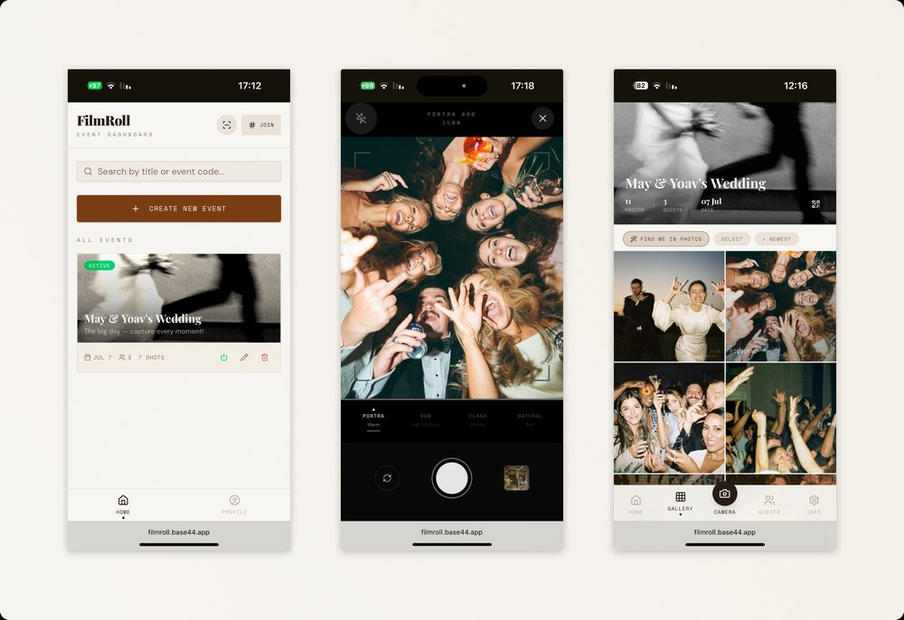
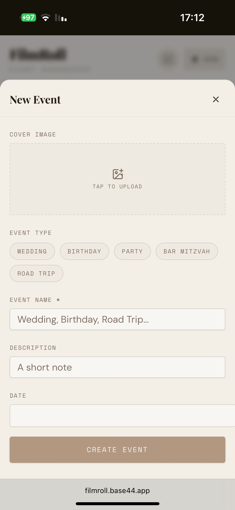
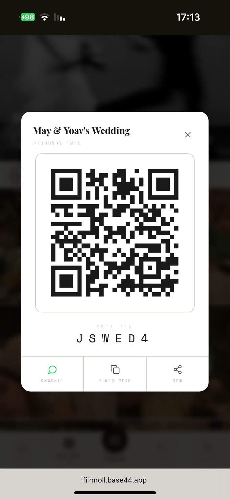
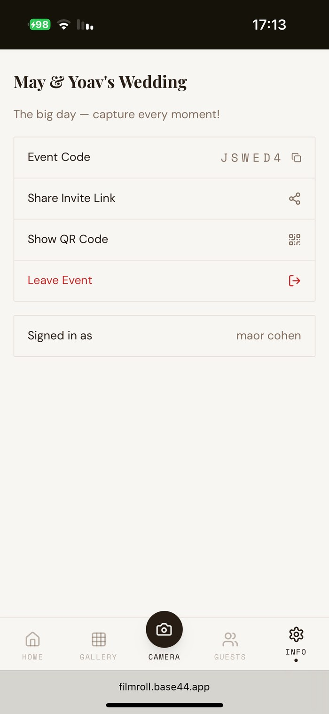
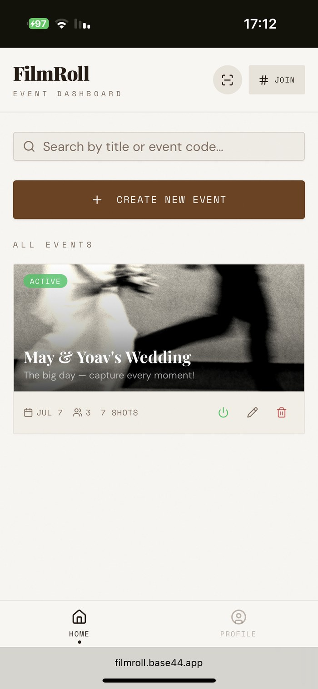
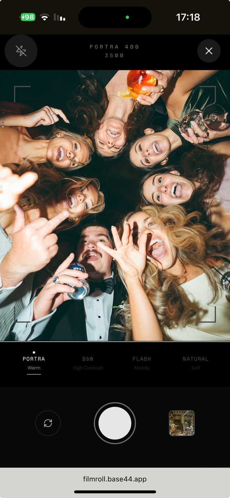
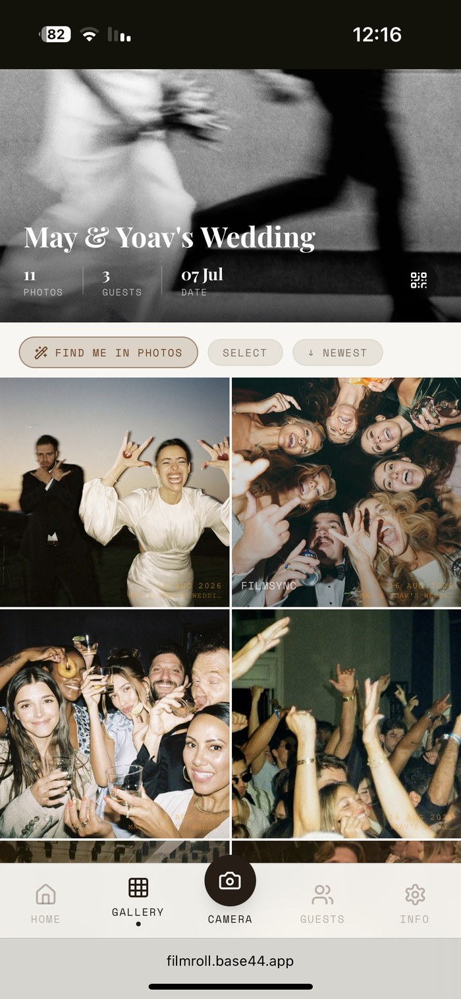

FilmRoll
A digital disposable camera for weddings: guests shoot on shared film, everyone gets the whole roll.
UX/UI case study by Maor Cohen Falah
Try FilmRoll live ↗
A digital version of a wedding tradition
I love the disposable-camera tradition at weddings, but the cameras themselves are expensive to buy in bulk, easy to lose in the middle of a party, and the photos sit undeveloped for weeks if anyone remembers to drop off the film at all. I designed and built FilmRoll end to end, research, UI, and the working app, as a digital version of that same tradition: guests join an event, shoot through a camera styled like real film, and every photo lands straight into one shared roll everyone can see.
Costly, easy to lose, and slow to develop
Cameras that disappear
Disposable cameras are a beloved wedding tradition, but they're costly to hand out to every table, easy to misplace before the night is over, and the results stay locked away until someone gets the film developed.
A shared digital roll
A shared digital roll guests join in seconds with a code or QR, shooting through an in-app camera with real film-stock presets so every photo still feels like it came off a disposable, minus the cost and the lost cameras.
Tested at May & Yoav's wedding
Tested live at a real wedding, May & Yoav's, where guests filled a shared roll over the course of the night instead of a stack of cameras nobody could find the next morning.
Keep the ritual, fix the logistics
The starting point wasn't a competitor audit, it was a real annoyance: buying a dozen disposable cameras for a wedding, watching half of them disappear by the second hour, and waiting weeks to see what, if anything, guests actually captured. The brief I set for myself was to keep everything people love about disposable cameras, the low stakes, the surprise, the analog feel, while fixing the parts that were purely logistical pain: cost, loss, and delay.
Keep the limits
A fixed set of film "stocks" instead of a full editing suite, so shooting stays fast and low-pressure like a real disposable.
Remove the friction, not the ritual
No app download wall or account setup before a guest can shoot, just a code, a QR, or a link.
Make it shared by default
One roll per event that everyone can see growing, instead of photos trapped on individual phones.
A physical object first, software second
Every screen was designed to feel like a physical object first and a piece of software second.
A camera, not a filter picker
The capture screen uses viewfinder crop guides and named film stocks, Portra 400, B&W, Flash, Natural, instead of generic Instagram-style filters, so choosing a look feels like loading a different roll of film.
Retro date-stamps on every shot
Each photo is stamped with the event date and name, the small orange corner-print detail that made disposable-camera photos instantly recognizable.
Join in one tap
An event code, a QR code, or a shareable link all lead to the same shared roll, so a guest can go from "what's this?" to shooting in seconds, no account creation required to look around.
One roll, not one camera per person
Every guest's shots land in the same live gallery, with sort, select, and a "Find Me in Photos" tool so the group can find their own moments inside the shared set.
Built solo in Base44
I designed and shipped the whole product myself, research through UI through the working build, using Base44 to go from concept to something I could actually hand guests at a real wedding.
From a new event to the shared roll






Constraints give a product character
Constraints give a product character
The film-stock presets and the fixed shutter are limits a real camera app would never have, but they're exactly what makes FilmRoll feel like something more special than a phone gallery.
No-code still means real design work
Building in Base44 sped up shipping, but every decision, the join flow, the shared roll, the retro stamp, still had to be designed and argued for like any other product.
Nothing tests a product like a real event
Watching actual guests join, shoot, and check the gallery mid-wedding surfaced things no amount of clicking through mockups would have shown me.
Thanks for reading!
More projects
Keep exploring the work.